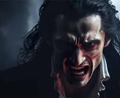
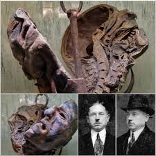
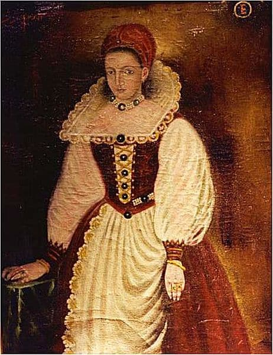
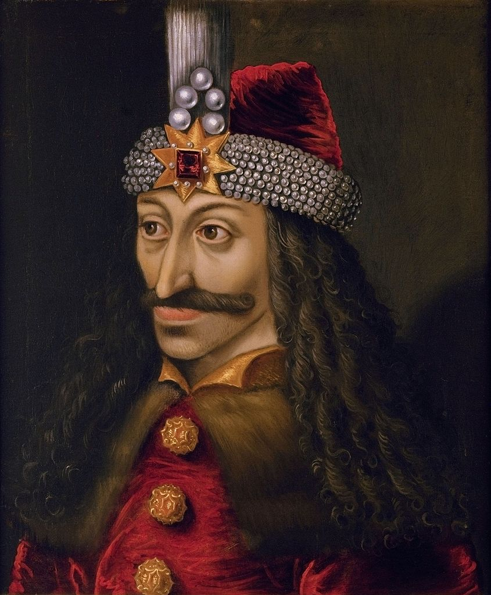
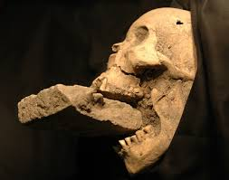
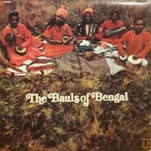
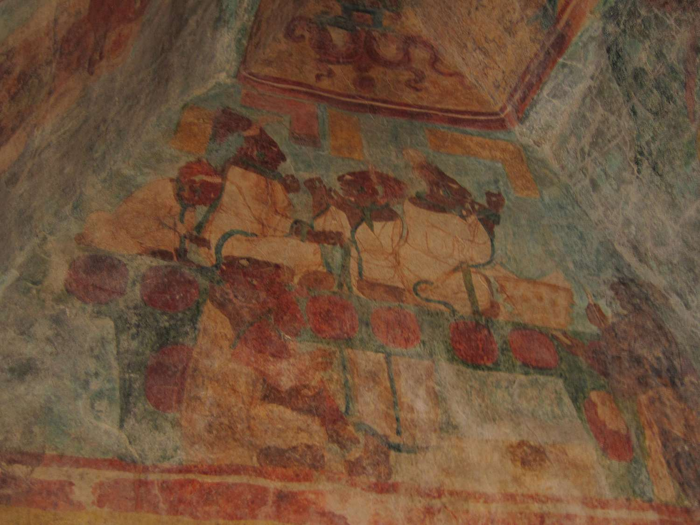
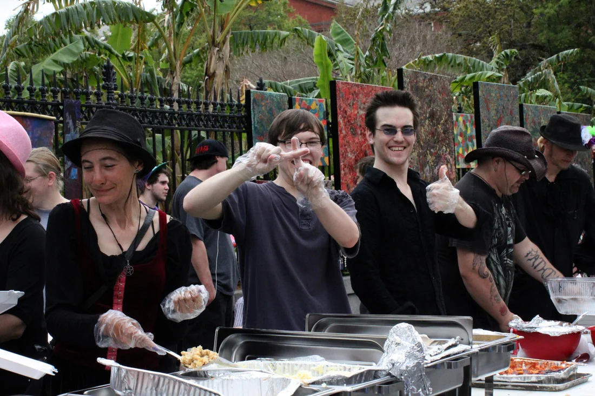
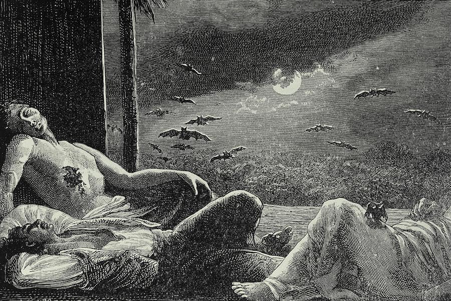

VAMPIRE

Introduction
Vampires are mythical, immortal creatures that feed on the blood of humans (or animals), and fear the sun, garlic, the cross, and holy water. They are some of the most famous monsters in literature and cinema, but their origin goes back to very ancient folklore.
History
The actual term “vampire” made its written debut in 1725, Groom said. Around that time, the ruling class of the Habsburg Empire — controlled by the German royal family, whose capital was Vienna, Austria — were hearing alarming stories coming out of borderlands that they’d recently annexed from the Ottoman Empire farther east.
In historical contexts, blood was utilized as a treatment for epilepsy; sufferers were encouraged to gather around scaffolds to collect the warm blood dripping from newly executed criminals. Richard Sugg of Durham University, author of "Mummies, Cannibals and Vampires," explains that blood was viewed as a "medium between the physical and the spiritual." The prevailing belief was that by drinking the blood of a healthy youth, one could absorb their soul, thereby healing their own afflicted spirit. These remedies only began to decline after the Enlightenment, with the rise of a general sense of reserve that dominated the 18th and 19th centuries.
During the 18th century, Eastern Europe—specifically Serbia, Bulgaria, and Romania under Ottoman rule—witnessed the most famous outbreaks of what was known as the "Vampire Epidemic." A wave of mass hysteria led communities to exhume graves and stake corpses, based on claims that these entities rose at night to feed on blood and spread disease. The most notorious historically documented cases include those of Petar Blagojević (1725) and Arnold Paole in Serbia, both of which significantly fueled the rise of vampire lore in later European literature and culture.

Peter Kürten, notoriously known as the "Vampire of Düsseldorf," was born in 1883 in Germany. Raised in a cycle of poverty and abuse, he developed disturbing tendencies early in life, beginning with animal cruelty before escalating to human targets. By the late 1920s, he became a phantom figure haunting Düsseldorf with a series of brutal, unpredictable attacks on women and children using knives, scissors, and hammers.
What terrified the public most was Kürten's obsession with blood; he confessed that consuming it provided him with psychological gratification, earning him his macabre nickname. His reign of terror ended in 1930 after he confessed his crimes to his wife, who subsequently turned him in. During his trial, he described his murders with chilling composure, leading to his execution by guillotine in July 1931. His final words were hauntingly specific, as he wondered if he would hear the sound of his own blood flowing after the blade fell. His story persists even today, as his dissected head was preserved and remains on display at the Ripley’s Museum in Wisconsin US .
Gilles de Rais, a French nobleman and former comrade-in-arms of Joan of Arc, remains one of the most terrifying and enigmatic figures in history. In the 15th century, he was accused of committing heinous crimes, including the consumption of children's blood and the performance of dark, bloody rituals within his castles. While enthusiasts of lore view him as an "elite vampire" who utilized his status to satisfy a bloodlust, historians categorize him as a sadistic criminal driven by perverted rituals and serial murders that shocked the foundations of French society at the time.

Countess Elizabeth Báthory remains one of the most chilling figures in European history. According to popular folklore, she was notorious for the murder of hundreds of young girls to consume their blood (or bathe in it, as some legends claim) in the belief that it would grant her healing and eternal youth. Regardless of potential historical exaggerations in certain details, official interrogation records from her trial explicitly mentioned practices involving the consumption of blood, cementing her status as a historical icon in vampire lore.
The scholar Newburgh recounts a fascinating tale of the undead in Scotland. A noblewoman's priest died and was buried in Melrose Abbey. He had spent most of his life hunting, earning him the nickname "Handypriest" (the dog priest). Moments later, Handypriest returned to life, attempted to break into the abbey, and visited his former mistress. One night, a brave monk lay in wait for the ogre. When Handypriest charged at him, the monk split his head open with a battle axe and pursued him to his grave. The following day, the monks cremated the intact body, still bearing the axe marks, until it was reduced to ashes. Handypriest never returned.
John Polidori’s 1819 story “The Vampyre,” inspired by Lord Byron, revived the vampire myth in Western Europe, laying the foundation for Bram Stoker’s Dracula in 1897. Modern vampires, with their fangs, blood-drinking, and aversion to garlic, are rooted in these rich traditions.
Stories of vampire-like beings span cultures worldwide for thousands of years, from the lamia of Ancient Greece to the revenants of medieval England. However, the modern vampire we recognize today largely stems from Eastern European folklore, popularised by 19th-century authors like John Polidori and Bram Stoker.
During the centuries BCE (c. 400 BCE – 50 CE), Roman historians such as Strabo and Posidonius documented the fierce practices of Celtic warriors in Gaul and Britain, who would drink the blood of their enemies after slaying them to absorb their spiritual essence. In victory rituals, the Celts were known to decapitate their foes, display the heads on their horses, and use the skulls as vessels to drink fresh blood. This practice was rooted in the desire to capture "Mana"—the spiritual power believed to reside within the adversary. While the Romans labeled them "barbarians" for these blood-based rituals, the practices eventually went extinct as "Romanization" reshaped European cultural norms.

Prince Vlad III (1431-1476 AD), ruler of Wallachia (Romania), known by the nickname "Dracula" (Son of the Dragon). Ottoman and German reports narrated that he used to dip his bread in the blood of his victims after execution by impalement, and eat it in front of everyone to terrorize the enemies. In one famous story, during a dinner with nobles, he impaled dozens of prisoners, then drank their blood spilled in a cup. These novels were exaggerated as propaganda against Vlad (who was protecting Christianity from the Ottomans), but they inspired Bram Stoker's 1897 novel Dracula, which turned Vlad into a legendary vampire.
Now, Lord, on us Thy flesh bestow And let us drink Thy blood Till all our souls are filled below With all the life of God (Hymns, no. 30)
From Thy blest wounds our life we draw; Thy all atoning blood Daily we drink with trembling awe Thy flesh our daily food (Hymns, no. 85)

In 1576, a deadly plague swept through Venice. Lavish monuments were erected to the famous victims, while commoners were buried in a large pit. On Lazzaretto Nuovo, a small island used as a quarantine zone, archaeologists discovered the skeleton of an old woman with a brick placed between her jaws. Historians believe that someone who found her bloated body concluded she was a vampire and blamed her for spreading the plague. Sixteenth-century Italians believed that vampires spread the plague, feeding on corpses by eating the shrouds of the dead, much like natchers. The brick was intended to prevent the consumption of the shrouds and thus halt the spread of the plague.
India
Extremist Shaivite monks live in cemeteries, eat the flesh of the dead (not murder, but burnt corpses), and drink from human skulls (sometimes alcohol or other liquids). Blood is not always central, but it is part of rituals to transcend taboos and achieve enlightenment. They are few (hundreds) and are constitutionally protected in India.
A Shaivite tantric sect (4th-8th century AD) who ate the flesh of the dead and drank human skulls and sometimes blood as part of rituals to achieve enlightenment. They are the ancestors of the modern Aghori.

Kristin Hanssen (2002), spend time in a village in Bengal where the author learned about this ideology and the sacred nature of drinking the blood and what it represents. but they basically use a cloth, similar to the function of a tampon, and then it is set to harden. After a time, they mix it with milk and some other things and then all the people of the group ingest it. They believe it energizes and benefits them physically and spiritually. This ideology has been found recorded as far back as the 15th century, which is before the legend of vampires in the late 17th century
It is an ethnographic (field anthropological) study of a mysterious religious group known as the Bauls, who are itinerant singers and practitioners of a secret cult in the Bengal region (West Bengal in India and Bangladesh). Bauls blend elements of Hinduism (particularly Vaishnavism), Islam and Tantra, and are known for their spiritual Bengali folk songs.
America

In the ancient city of Palenque (c. 600–900 CE), King Pacal the Great led his people in rituals of bloodletting. The king would sit in an ornate temple surrounded by nobles, using a sharp stingray spine to pierce his tongue or ear, allowing the blood to flow onto sacred paper. This paper was then burned, with the smoke carrying the essence of the blood to the gods as an offering. The Maya believed that blood nourished the deities and prevented the apocalypse. Ancient reliefs immortalize these acts, such as the depiction of Queen Lady Xoc piercing her tongue to summon ancestral spirits. These rituals were a daily obligation for the elite, as illnesses or agricultural disasters were interpreted as divine wrath caused by a failure to provide blood.

In Tenochtitlan (modern-day Mexico City, c. 1400–1500 CE), priests led a monumental ritual at the Templo Mayor (Great Temple). Imagine a crowd of tens of thousands gathered under a scorching sun, as prisoners of war were led to the top of the pyramid. The priest, wearing human skin turned inside out as a symbol of regeneration, would cut open the prisoner's chest with an obsidian knife, tear out the beating heart, and raise it toward the heavens to feed the sun god Huitzilpuchtli. The blood would then be sprinkled on the statue, and the priest or nobles might drink some of it as part of the ritual to gain the victim's power. The Aztecs believed that blood prevented the collapse of the universe, and in one annual festival, thousands of people were killed in a single day. A famous story recounts that Emperor Ahuitzotl had 80,000 prisoners killed at the dedication of a temple, and blood flowed like a river.

In America, there's a subculture called the "vampire lifestyle," where thousands of people claim they need to drink human blood or energy for health (not imaginary, but as a psychological or medical need). These people aren't murderers; they obtain blood from consenting donors through safe methods (such as small drops).
Missionary reports from the 18th and 19th centuries document the harrowing practices of certain warriors who would drink the blood of their enemies immediately after slaying them. The purpose of this ritual was to absorb the opponent's courage and possess their soul. Some witnesses described these warriors by stating, "They appeared rabid... as if the blood was awakening them." This has led some believers in lore to categorize them as "tribal vampires," who viewed blood as a medium for the transfer of physical and spiritual power from the defeated to the victor.
In Pisco, Peru, a large crowd gathered in 1993 by the grave of Sarah Ellen Roberts, dubbed ‘Dracula’s Bride.’ Born in 1872, Sarah was accused of murder, witchcraft, and being a vampire. After being sealed in a coffin and buried in Peru, locals feared her return 80 years later, but she did not rise. Witch doctors claimed victory after dousing her grave with holy water.
An intriguing vampiric legend developed independently in the ancient Mexican Aztec tradition. Ciutateos or Ciuapipiltin (‘honourable mothers’) are the spirits of women who died in childbirth. Like witches, they held sabbats at crossroads and rode broomsticks. But most interesting for our vampire history is their habit of drinking the blood of children. Like European vampires, they only came out at night, too. Unfortunately, while there’s no reason to doubt the Aztecs believed in something vampiric, this legend comes with a caveat. The Ciuapipiltin stories were written down by Europeans, whose (mis)translations were mediated through their own knowledge and experiences.
Iraq
Ancient Assyrian and Babylonian texts frequently reference entities known as the Edimmu—the restless spirits of those who remained unburied or were not accorded proper funerary rites. The traditional description of this being is striking and malevolent: "The Edimmu drinks the blood of the living and brings about disease and wasting, for they were not buried according to the rituals."
Believers in these myths rely on interpretations that view the Edimmu as a partially physical entity rather than a mere ghost, with the consumption of blood acting as the primary driver for its survival and its harmful influence. This entity represents a "disruption of death" or a failed transition to the afterlife caused by the absence of burial ceremonies. Historically, the Edimmu is regarded as a primitive form of the vampire, existing in Mesopotamian lore millennia before the term gained prominence in European culture.
Scythians
The Scythians were a nomadic pastoralist people who dominated vast territories from Central Asia and Siberia to the Black Sea (8th century BCE – 2nd century CE). According to the Greek historian Herodotus, a Scythian warrior would perform a grisly ritual of drinking the blood of the first enemy he slew in battle as a rite of victory. Furthermore, they were known to clean the skulls of their defeated foes and convert them into drinking cups, believing that consuming blood from a rival's skull allowed them to absorb the strength of the defeated soul. These practices, which also included collecting scalps, were intended to terrorize their enemies—as seen during their wars against the Persians in 513 BCE. This fierce martial culture significantly influenced later nomadic groups, such as the Huns.
Indonesie
The Dayak people of Borneo practiced bloody rituals associated with "headhunting" since the 19th century, where warriors would drink the blood of their enemies and consume specific parts, such as hearts and palms, to absorb the strength of their souls. In modern times, these practices resurfaced chillingly during ethnic conflicts, such as the Sampit conflict (2001) and the Madurese massacres, where blood was consumed as an expression of intense hatred and the dehumanization of the enemy. Historical reports also document that during the Indonesian massacres (1965–1966), certain militias drank the blood of their victims based on a superstitious belief that it would prevent them from going insane after committing murder. While these practices are strictly prohibited by law today, they remain deeply etched in collective memory and local folklore.
Theories
This tale might seem like fiction, but it’s reportedly a true event from what is now Wrocław, Poland. In September 1591, a shoemaker called Weinrichius cut his own throat. Shortly after his burial, his ghost was seen wandering the town and even slipping into people’s beds, leaving bruises on their arms and legs. Seven months later, convinced they had a vampire on their hands, locals exhumed Weinrichius’s body. It appeared fresh, with tight skin and a rose-shaped mole on his foot, suspected to be a witch’s mark. They reburied him under gallows, but his hauntings persisted until his body was finally dismembered, burnt, and the ashes cast into a river.
Arnold Paole, a Serbian soldier, returned home after a tour in Greece, claiming to have killed a vampire. After dying in an accident, villagers soon reported seeing him at night and experiencing physical weakness. His grave was opened, and his body staked. However, six years later, a vampire epidemic struck the village, leading to the exhumation of 14 bodies, with 12 showing signs of vampirism.
In April 1922, a man in London felt a presence bite his neck, drawing blood. Two more victims reported similar attacks the same day. Though no suspect was identified, rumours spread of a vampire hunter tracking the creature to Highgate Cemetery. Around the same time, sightings of a huge bat in West Drayton added to the mystery, but after April 1922, no more incidents occurred.
Silesia was a prime destination for vampires in the 18th century. In fact, the region has long been home to vampires. The first documented record of a vampire in Silesia dates back to 1599 and concerns a shoemaker from Breslau. This shoemaker committed suicide and then roamed Breslau, tormenting the living and draining their souls. Eventually, the locals decapitated the body, removed the heart and limbs, and burned it. Silesia was notorious in the 18th century for its vampires and grave-desecration. One vampire murder in Silesia was so gruesome that the Habsburgs enacted laws against all anti-vampire measures.

In 1725, Peter Blagojevic died in Kiselova. In the ten weeks following his death, nine more people fell ill and died within 24 hours. On their deathbeds, they all swore that Peter had entered their bedrooms and lay on top of them. Eventually, the inhabitants threatened to leave Kiselova permanently if their Austrian rulers did not get rid of Peter. The state representative brought a priest with him to oversee the exhumation. Peter's body was not decomposed and showed strange signs (possibly blood around the mouth and sexual arousal). The locals bound the body and burned it.
According to sociological studies , certain groups identified as "self-identified vampires" adopt unconventional lifestyles, including altering their sleep schedules to become nocturnal and avoiding sunlight as much as possible. These individuals practice the consumption of blood from people known as "blood donors," who form a subculture of their own characterized by submissiveness and servant-like roles, often finding this position to be psychologically or sensually fulfilling.
"Feeding" commonly occurs within private contexts, leading to a close bond between the vampire and the donor. While donors participate for psychological or sensual satisfaction, these "vampires" claim that consuming blood induces feelings of tranquility, euphoria, and intoxication, asserting that such practices are vital for their perceived health and wellbeing.
These beliefs and practices are typically considered unorthodox, leading many to view vampirism as an occult religion that poses a threat to both society and traditional Christianity. Consequently, another subculture has emerged known as "vampire hunters"—individuals, often Christians, dedicated to the pursuit and persecution of real-life vampires in an effort to protect social order.
Unsurprisingly, those identifying as vampires feel deeply misunderstood and persecuted. In their defense, scholar Christopher Herbert (2002) notes that many religions, including Christianity, recognize the spiritual power of blood. He highlights several Christian hymns and traditions where the concept of consuming blood is sacred and central, suggesting that the preoccupation with blood's essence is not merely a fringe "vampire" phenomenon but is rooted in broader religious contexts.
There are those who claim that the global elite (Hollywood, politicians) are real vampires who drink the blood of children to obtain "adrenochrome" (an imaginary substance that grants eternal youth). This is an extension of the old myth, but more political.
Some mythological theories link vampires to real illnesses such as porphyria, a genetic disorder that causes extreme sensitivity to light, anemia, and symptoms resembling insanity or paleness. Some believe that these diseases were interpreted in the Middle Ages as the "vampire's curse", as people believed that the dead would return to drink blood to cure themselves. For example, during the plague epidemic, corpses would swell and ooze blood from the mouth due to decomposition, which led to the belief that they were vampires. This theory has morphed into the modern belief that true vampires are inheritors of these diseases, and need blood to survive. Historical figures such as Vlad the Impaler are also cited as inspirations, but some dismiss them as real vampires, but rather as victims of smear campaigns.
Some individuals believe in the existence of secret "houses" or "councils" of vampires, such as those in New Orleans or Chicago, where they meet to share energy or blood with consent. There is believed to be a "Vampire Council" ruling these societies, with strict moral codes against killing or harming. Some theories say that the hippie movement of the 1960s was a plot by vampires to normalize their lifestyle (such as nightlife and group gatherings). There are also beliefs that Vampires possess special spiritual philosophies, derived from paganism or magic, and reject traditional religions but may incorporate elements such as "living under Christ."
Some theories link vampires to ancient gods, such as the Egyptian goddess Sekhmet, who drank blood as divine punishment. Some believe she is the first Vampire, and that her lineage still exists today as people who need blood to survive. There are also beliefs in vampire hunters as an antidote, mostly from Christians who see vampires as demons.
It was not always this way; across history, we can find cases where human blood was considered a bona-fide medical cure. At the end of the 15th Century, for instance, Pope Innocent VIII’s physician allegedly bled three young men to death and fed their blood (still warm) to his dying master, with the hope that it might pass on their youthful vitality.
Research

Anatomists have provided logical explanations for the shocking sights people saw in ancient times when opening graves, such as bloating of the corpse, dark liquid coming out of the mouth and nose, and nails and hair remaining prominently visible. Modern science confirms that these phenomena are nothing but stages of natural decomposition. The dark liquid is not fresh blood, but rather the products of tissue decomposition, and the survival of hair and nails is due to the shrinkage of the skin after death, which makes them appear longer. However, in ancient times and due to the absence of scientific knowledge, these signs were interpreted as the dead person “feeding” in their grave.
Some vampire believers believe that true vampires are people who are deficient in vital energy (such as "subtle energy" or prana in some cultures). This deficiency usually appears in teens, causing them to need “nourishment” from others to stay healthy. It is not associated with immortality or superpowers like in the movies, but rather a medical or spiritual condition that causes an individual to suffer from chronic diseases if not nourished. Believers assert that it is neither contagious nor a disease, but rather a birthmark. In some societies, this deficiency is believed to be due to damage to energy centers such as the second chakra, making them dependent on others for self-healing.
Emyr Williams (2017) conducted a study on self-identified vampires using questionnaires to determine their religious and spiritual beliefs. He found that, for some, religion and spirituality played a large role in their vampirism. One respondent believed that he had experienced “visitations from ‘deities’ or something outside of [himself] following a ritual” . Furthermore, he discovered that many vampires actually believe in the Christian God. One female member said, “I believe in God that he came in the Flesh Incarnate as Jesus Christ his Son” . This further proves that the vampires might just be misunderstood and not the godless heathens many believe they are
Thousands of "real-life vampires" live normal lives: parents, employees, even church members. John Browning, a social researcher who studied the community, found that some drink human blood for possible medical reasons, such as iron deficiency or psychological disorders. In one account, a young woman from Texas describes how she began drinking her partner's blood after experiencing chronic fatigue and joined online groups to share experiences. These individuals reject fantasy and focus on safety, but some stories involve false accusations of "Satanic rituals," forcing them to live in the shadows.
In the French quarter of New Orleans, John Edgar Browning is about to take part in a "feeding". It begins as clinically as a medical procedure. His acquaintance first swabs a small patch on Browning’s upper back with alcohol. He then punctures it with a disposable hobby scalpel, and squeezes until the blood starts flowing. Lowering his lips to the wound, Browning's associate now starts lapping up the wine-dark liquid. “He drank it a few times, then cleaned and bandaged me,” Browning says today.A self-confessed “needle-phobe”, Browning had not been looking forward to the feeding. “I’m actually pretty fearful of anything sharp approaching my skin,” he says. But as a researcher at Louisiana State University, he was willing to go through with it for his latest project: an ethnographic study of the New Orleans “real vampire” community.
For many, real-life vampirism is a taboo; over the last few decades, it has come to be associated with gruesome murders such as the notorious case of Rod Ferrell in the US—a deluded killer apparently inspired by fantasy role-playing games. “When people talk about self-identified vampires, a lot of times these horrible images come to mind,” says DJ Williams, a sociologist at Idaho State University. “So the community has been closed and suspicious of outsiders.” As a result of this stigma, individuals within the vampire community often insist on using aliases when communicating with the media or researchers to protect their identities.
It's important to note that while some vampires seek psychic energy to give them power, others (known as "medical vampires") believe their need for blood is purely physiological. One medical vampire, known as "CJ!" (the exclamation mark is part of her online pseudonym), says, "The identity of 'vampire' doesn't mean much to us. However, once we become addicted to blood—especially human blood—it's impossible to get rid of that trait."
Through Browning’s inquiries with his companions, he discovered that the intense craving for blood typically manifests at the onset of puberty. Browning recounts the case of one individual who, at the age of 13 or 14, suffered from chronic weakness and a lack of energy compared to his peers. This changed during a scuffle with a cousin when he accidentally tasted blood from a wound. Browning notes, "He suddenly felt a great surge of vitality." From that moment on, what began as a chance encounter evolved into a compulsive hunger for blood as a means to regain strength and energy.
Steven Schlozman of Harvard University suggests that diagnosing individuals who practice vampirism is akin to "walking a tightrope." He explains that as a psychiatrist, his initial clinical response to a patient presenting with such concerns would be to evaluate for potential psychosis, given that the practice is so far removed from culturally established norms. Nevertheless, Schlozman advocates for maintaining an open mind, investigating whether these individuals genuinely derive a perceived benefit from the practice rather than rushing to a definitive psychological label.
If there's one thing most modern myths agree on, it's that vampires hate garlic. However, this is a myth conceived by Bram Stoker, the author of Dracula. While there are references in some parts of Romanian folklore to placing garlic in the mouth of a suspected vampire to prevent him from rising, garlic wasn't a common deterrent elsewhere. The most common plants in Slavic tales are rosemary, roses, and mustard seeds. All of these are aromatic, so garlic isn't an unlikely choice. It's more accurate to say that vampires dislike plants with strong odors.